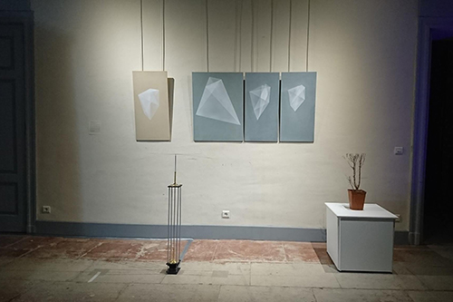
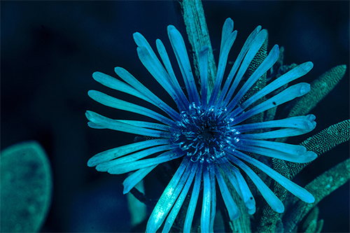
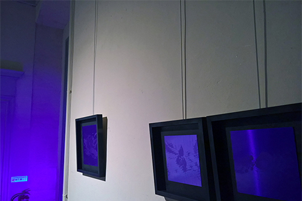

Vue de l'exposition, au premier plan Trichromatisme, projection des couleurs de lʼabeille, GBUV (Green / Blue / UV), Sabrina Issa, LAAB 2018. La perception trichromatique est la capacité à voir les couleurs différentes par l'intermédiaire de trois types de cônes photorécepteurs.
L'ACTE DE LA GREFFE, la transitivité.
Diffusion de l'édition et multiples
Le site de La Maison dans le ciel accueille en résidence de recherche et de création, théoriciens, artistes, scientifiques et ingénieurs autour d'une recherche collective, ayant comme point de départ l'acte de la greffe. Le collectif du LAAB - augmenté - travaille de façon pérenne sur le site, en procédant notamment à des greffes sur le pourtour de la résidence. Des interventions, conférences et propositions sonores ponctuent les temps de résidence et s'accompagne d'une exposition de la recherche sur six mois. Dans une relecture au long cours de ce qui dure, fût ce à l'état de traces, nous nous proposons de travailler collectivement, ce qui demeure comme ce qui est. Apporter une attention sensible sur le site à la trace, afin de rendre possible, par le soin, un bien commun, lʼémergence et la pérennisation de la forêt fruitière.
Notre démarche nous place dans une sorte de transition continue du sens, une situation ouverte et changeante. Nous sommes dans une approche de lʼespace et des temporalités, où les échelles sont interrogées, où se mélangent les notions dʼintériorité et dʼextériorité, d'individus et de collectif, de règne biologique et minéral.
Cʼest à partir de ce projet réalisé en work in progress que nous rendrons visible à travers une édition, le travail réalisé au fils temps. Lʼédition sera ce supplément dʼespace pouvant transmettre et redéployer la diversité de lʼensemble des propositions, éphémères ou appelées à vivre sur le site.

Lʼart topiaire de la pyrale du buis, Peintures sur fibre composite, dimensions variables, Nicolas Bralet, LAAB 2018.
La pyrale dévaste les topiaires des jardins à la Française en grignotant la définition même de ce type de jardin : la recherche de la perfection formelle, d'une majesté théâtrale et d'un goût du spectacle.
Dans « LʼArt topiaire de la Pyrale du Buis », est utilisé la disposition naturelle de ces papillons attirés par la lumière et posées sur un mur selon un ordre qui nous échappe. Les pyrales semblent ainsi être de petits avions garés sur un aérodrome. Cette ordonnancement des insectes, détermine les formes géométriques des peintures. Les papillons sont reliés entre eux par groupe de trois. Chaque insecte devient le sommet de triangles. Dans un jeu de superpositions et de transparences, on peut y percevoir des faisceaux qui se croisent, des pierres précieuses taillées.
Ces formes géométriques créent « lʼArt topiaire des pyrales », un pied de nez aux jardins à la Française où la nature se doit dʼêtre ordonnée, taillée, géométrisée, maîtrisée.
Vidéo, simulation en images de synthèse de la vue dʼune abeille en déplacement, François-David Collin, LAAB 2018.
Synthétisant plusieurs de nos connaissances actuelles sur la vision des abeilles, cette vidéo propose une simulation de cette vision en situation sur une trajectoire en vue subjective dans un extérieur dense en poussière et
soumis aux turbulences de l'air.
Perception des UV contrastant plus fortement les surfaces éclairées, profondeur de champ limitée à quelques centimètres et sensibilité quasi exclusivement liée au mouvement et à la vitesse : tous ces éléments induisent une visibilité extrême des détails de la dynamique de l'environnement, et en particulier du moindre grain de poussière, saisi dans une vision
cinétique pure.

Delosperma sp., photographie réalisée avec un Nikon1 J1 défiltré et dʼun filtre Baader UV. Sabrina Issa, LAAB 2018.
Le LAAB a réalisé une série de photographies grâce à un appareil spécifiquement élaboré pour lʼexposition et adapté à enregistrer le champ des UV. « Cet appareil à vision » nous permet de révéler les changements de couleurs, les lignes et les motifs visibles sur les fleurs à destination des insectes.

Onagre, Stapelia revoluta v.glaucesens et Impatiens bicaudata, impressions insolées sur feuille polymère UV contre aluminium, 20 X 20 cm et 30 x 30 cm, Sabrina Issa, LAAB 2018.
Avec le choix du bleu ou du jaune, couleurs bien perçues par les abeilles, certaines fleurs n'hésitent pas à développer une signalétique au centre de la corolle, formée de traits ou de tâches sombres, nommée "piège à nectar", qui a la particularité de n'être visible que dans l'ultraviolet parfaitement perceptible par les abeilles, mais invisible pour nous. C'est précisément ce dernier point de la couleur et de sa perception qui a été insolé sur des feuille polymère sensibles aux UV.

Vue de l'exposition, Aéroport à insectes,Domaine de Restinclières, Maison départementale de l'Environnement, Prades-le-Lez, LAAB 2018.